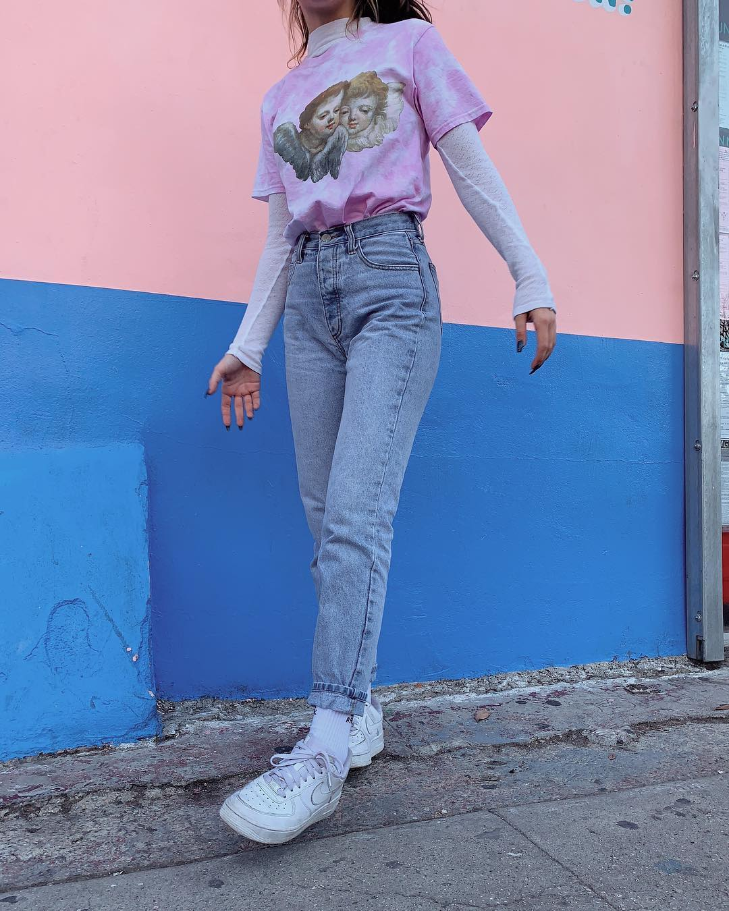

NHỮNG TIN TỨC NEW NHẤT 2021

Tại xứ Phù Tang, người ta không chỉ được chiêm ngưỡng một nền văn hóa lâu đời vừa khắc kỉ vừa nền nã, mà còn thấy rõ một hệ tư duy thẩm mĩ có nhiều phần quái tính. Giả định mỗi người Nhật là một tiểu vũ trụ, hàng triệu nền tiểu văn hóa song song cũng từ đó mà hình thành
Một đôi guốc gỗ Geta, một bộ Kimono nhuộm theo kĩ thuật Yuzen với đai lưng Obi ngang hông có thể là hình ảnh kinh điển mỗi khi ai đó nhắc về thời trang Nhật Bản. Trong tâm tưởng của nhiều người, văn hóa Nhật đại diện cho những gì mị hoặc, thanh lịch và lâu đời. Hiện đại và truyền thống, phóng túng mà khắc kỉ, sầm uất nhưng đơn độc, nước Nhật là bức tranh toàn cảnh bao chứa những điểm mâu thuẫn nhất của con người và thế giới. Nhưng tại chính trong sự mâu thuẫn ấy, nét hoà hợp được hình thành mà thời trang chính là minh chứng hữu thực nhất.
Người mẫu Kiko Mizuhara với bộ trang phục mang đậm dấu ấn truyền thống Nhật Bản trên một tạp chí Trung Quốc do nhiếp ảnh gia Trần Mạc thực hiện
Tôi gặp Diễm My khi trời đã ngả về chạng vạng. Diễm My trong một chiếc áo oversized màu đen, mái
tóc thả tự nhiên, hướng thẳng đôi mắt trong veo nhìn tôi khi trả lời phỏng vấn. Giọng Diễm My khe
khẽ, như muốn người nghe phải tập trung cao độ. Diễm My uống một tách trà, rồi trải lòng rằng
nhiều người lầm tưởng cô sống vô tư và ít va chạm. Họ đều đã nhầm. Đằng sau khuôn mặt sáng đầy
chất thơ là những câu chuyện nhiều người chưa tỏ…Diễm My bảo, có hai khái niệm về cuộc sống mà My nghiệm ra sau từng ấy năm lăn lộn với nghề, gồm “stand for nothing”
và “stand for something”. Nữ diễn viên sinh năm 1990 từng sống vì lẽ thứ nhất. Diễm My từng nghe theo số đông, không biết cách
thể hiện cá tính và dần mất đi bản sắc riêng. Nhưng mọi thứ giờ đã khác.
Dạo gần đây Diễm My có sự thay đổi lớn về mặt hình ảnh, ví như các bộ hình được đầu tư, hình ảnh xuất hiện trước công chúng cũng khác biệt so với trước kia. Lí do vì sao vậy?
Bản thân tôi không muốn bó buộc, nhàm chán trong một hình ảnh cố định. Trước đây, phong cách của tôi
chiều theo số đông. Họ muốn Diễm My mặc đầm Công chúa, thích nét đẹp an toàn. Nhưng vì quá nhiều người theo
phong cách này, nên bản thân tôi cũng chẳng nổi bật hơn ai. Khi nói chuyện với quản lý mới, tôi nhận ra mình
có phần lạnh, nhiều năng lượng âm vì mình sống nội tâm và ít nói. Mới hôm rồi, quản lý bảo, “thay vì để tóc
gợn sóng để che đi gò má cao, Diễm My nên lộ ra nhiều góc cạnh của gương mặt.” Tôi thấy đúng. Cái gì của mình
cũng đều thật, là nét riêng chỉ mình tôi có. Vậy tại sao không thể hiện ra ngoài? Tôi không muốn làm theo số
đông, vì có những cái cố cũng không bằng người ta được.